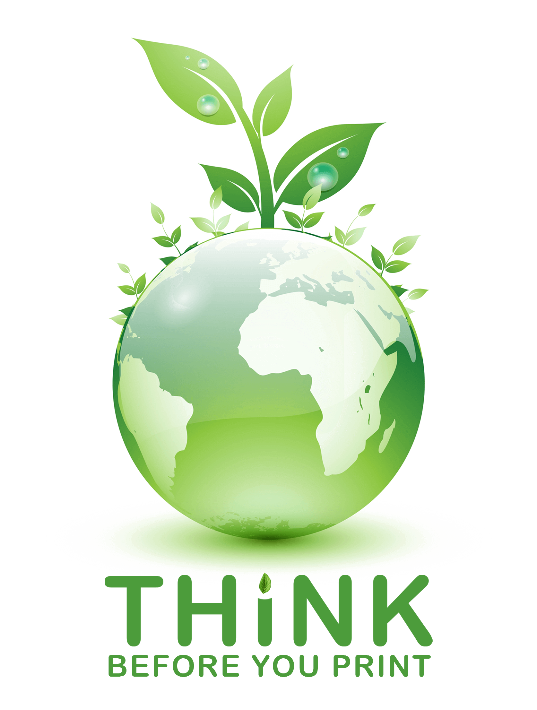

<ion-content [fullscreen]="true" [scrollY]="false">
  <ion-slides [pager]="true">

    <ion-slide>
      <div class="slide">
        
        <h2 class="dancingScriptFont">Welcome!</h2>
        <p class="meriendaOneFont">to the <b>A2 Directory</b> 2020/21.<br>A single place to find all the details of  Leo District 306 A2.</p>
      </div>
    </ion-slide>

    <ion-slide>
      
      <h3 class="dancingScriptFont">Why directory as an app?</h3>
      <p class="meriendaOneFont"><b>Ionic Framework</b> is an open source SDK that enables developers to build high quality mobile apps with web technologies like HTML, CSS, and JavaScript.</p>
    </ion-slide>

    <ion-slide class="slider-3">
      
      <h3 class="dancingScriptFont">Think Before You Print</h3>
      <p class="meriendaOneFont">1 ream of paper already uses up <b>60%</b> of a tree.
      </p>
      <h6 class="text-uppercase text-success"><strong>Save Paper, save tree</strong></h6>
    </ion-slide>

    <ion-slide class="slider-4">
      
      <h5 class="text-danger"><strong>Internal Use Only</strong></h5>
      <p class="mb-1 text-secondary">We respect Leo Officers’ privacy. Please do not share the contact details in this directory with third parties without prior permission from the Leo District Council 306 A2. Also, you have to agree to all the terms and conditions of Leo District Council 306 A2.</p>
      <button class="btn btn-danger meriendaOneFont agree-btn" (click)="continue()">I Agree&nbsp;&nbsp;<i class="far fa-thumbs-up"></i></button>
    </ion-slide>

  </ion-slides>
</ion-content>
